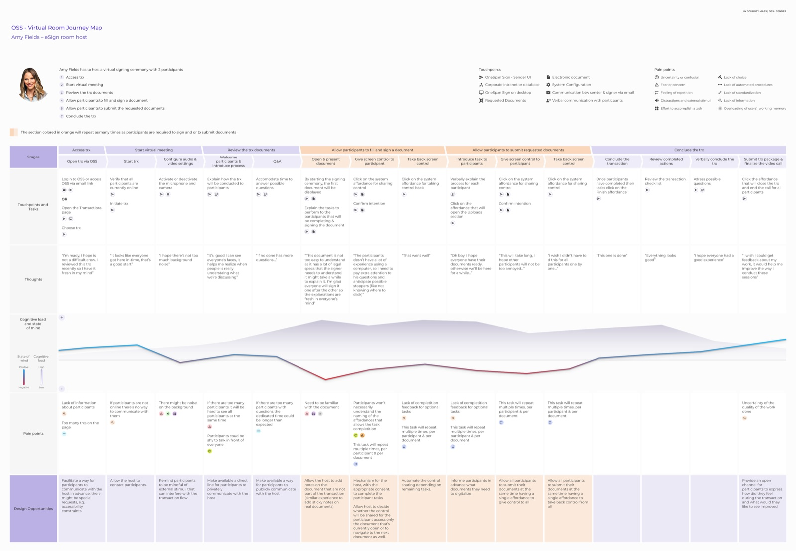
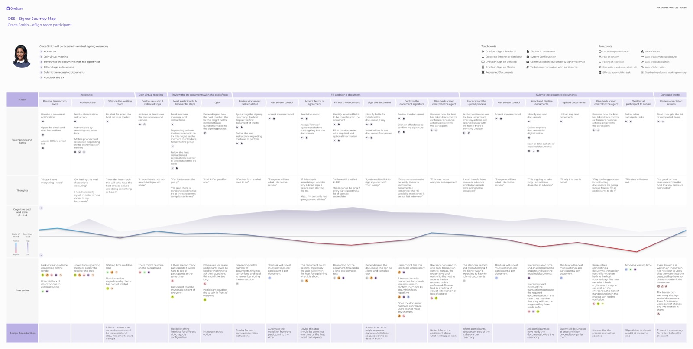

03
My role as design lead of OneSpan Sign
I designed the research phase to deliver the material the product managers could use to help other stakeholders empathize with the end-user and this way get the needed support to carry on with the feature development. I used insights from previous user interviews that were already in the company database and I created the personas altogether with each persona journey map for the use cases that were defined. Once we got the feature approved, I delivered the hi-fidelity interactive prototype that was used for usability testing and the proper documentation once it moved to the development phase.


